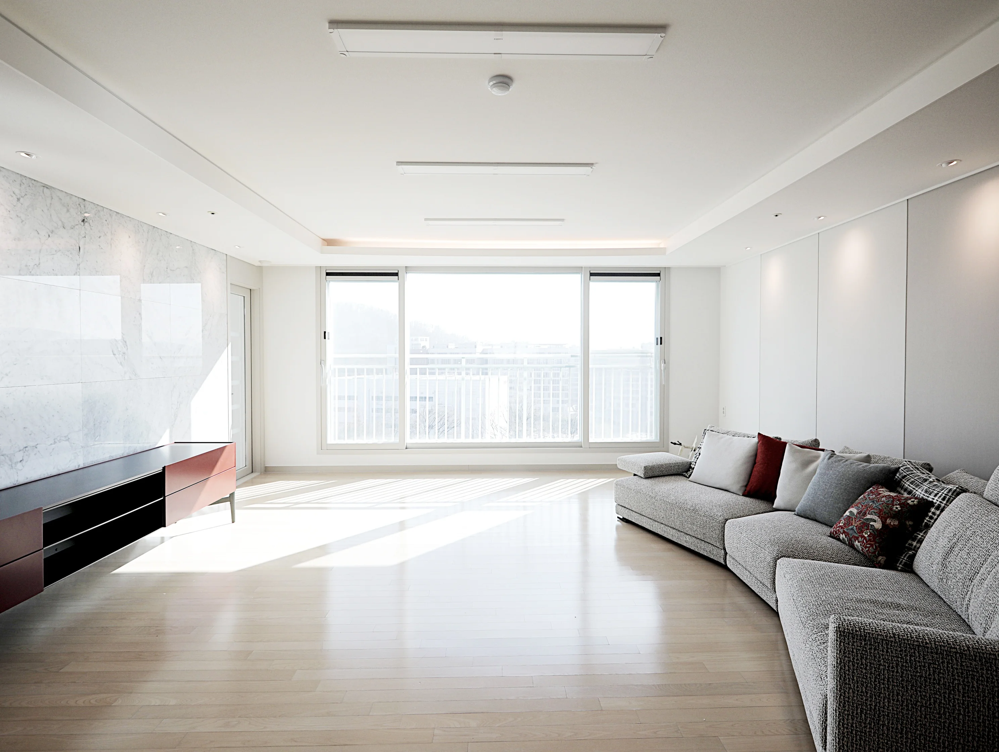

이번 주의 집가구를 비우고

처음엔 수납이 걱정됐지만 생활 동선을 먼저 정리하니 답이 보였습니다.

거실 한쪽 벽을 책과 생활용품을 위한 수납으로 만들려고 합니다.

큰 가구 하나에만 색을 사용하고 나머지는 따뜻한 중성색으로 맞췄어요.

소파와 식탁 사이에 80cm의 통로를 확보한 실제 치수를 공개합니다.

식사뿐 아니라 공부와 작업에도 쓰는 우리 집의 중심을 만들었습니다.
나무의 결, 3000K 조명, 직물의 질감을 겹쳐 따뜻함을 더했습니다.